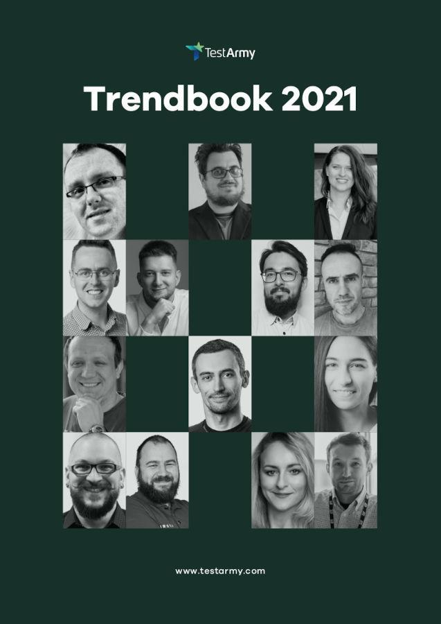

TrendBook 2021 - sylwetki autorów
W tym roku miałem przyjemność znaleźć się w bardzo doborowym gronie podczas tworzenia TrendBooka 2021, którego wydawcą jest portal TestArmy. Zachęcam do zapoznania się z sylwetkami autorów oraz najciekawszych cytatami, z ich wypowiedzi.
TrendBook 2021
Czym tak w ogóle jest TrendBook? Z jednej strony jest to forma reklamy firmy i samych autorów, ale z drugiej strony jest to również dosyć unikatowa forma spojrzenia na rzeczywistość oczami autorów, zebrana w zwięzłej formie. Rzeczywistość, której wspólnie się przyglądamy, odnosi się do wydarzeń z roku 2020 oraz tego co według nas może się wydarzyć w 2021 w świecie okołotesterskim. Sama publikacja to ponad 90 stron, która podzielona została na poniższe kategorie:
- QA - Aleksandra Kornecka, Daniel Dec,
- Testowanie aplikacji mobilnych - Piotr Wicherski,
- Automatyzacja testów - Maciej Wyrodek, Emilia Lendzion-Barszcz, moja skromna osoba, Michał Ślęzak,
- Test management - Michał Buczko, Jakub Rosiński, Zbyszek Moćkun, Marta Firlej,
- DevOps - Łukasz Pietrucha,
- IoT - Marcin Sikorski,
- Cyberbezpieczeństwo - Paweł Wałuszko.
Sylwetki autorów
Zanim przejdziesz dalej, miej świadomość, że sylwetki tworzyłem na podstawie tego, co znajduje się w samym TrendBooku oraz ogólnie dostępnych materiałów.
Jeśli natomiast zastanawiasz się, dlaczego przedstawiam ludzi, a nie piszę o czymś bardziej technicznym, to spieszę z wyjaśnieniem. W poprzednim punkcie masz listę kategorii, które mogą pomóc Ci uzmysłowić, że testowanie to bardzo szeroki temat i nie da się być ekspertem we wszystkich kwestiach. Jeśli dzięki tej liście odkryjesz, że interesuje Cię jakiś konkretny temat bardziej niż to, co robisz obecnie, to będziesz wiedział do kogo skierować swoje pierwsze kroki. Nie przedłużając już bardziej, zapraszam do zapoznania się z sylwetkami autorów.
Aleksandra Kornecka
Jak możemy przeczytać:
Ola pracuje jako Software Quality Assurance Engineer z ponad 7-letnim doświadczeniem komercyjnym. Chętnie bierze na siebie obowiązki rekruterskie i liderskie, kiedy pojawia się taka potrzeba. Jako pasjonatka dbania o jakość w IT docenia nurt DevTestSecOps, dobre procesy w pracy. Interesuje się też analizą wymagań i mitygowaniem ryzyka, UXem, ochroną danych osobowych oraz architekturą informacji. Ola jest osobą aktywną w społeczności testerskiej - jako prelegentka, uczestniczka, organizatorka, mentorka. Po pracy uprawia pół-profesjonalnie lekkoatletykę (treningi, zawody sprinterskie 100m, 200m), bywa domorosłą fotograf oraz social media ninja. Z wykształcenia magister kognitywistyki, która stara się korzystać ze swojej wiedzy dla dobra zespołu oraz jakości oprogramowania.
Ze swojej strony dodam, że Ola jest między innymi:
- współzałożycielką Girls Who Test,
- członkiem komisji rewizyjnej w SJSI.
Daniel Dec
Jak możemy przeczytać:
Pracował w wielu organizacjach, gdzie spełniał się w różnych rolach związanych z wytwarzaniem oprogramowania, co wykształciło w nim holistyczne podejście do projektów. Jego głównym celem i motywacją od zawsze było, aby pozostawić firmę, w której pracuje w lepszym stanie, niż gdy do niej przyszedł - czemu to oddaje się z pasją od lat. Tworzył zespoły i zarządzał nimi, projektował procesy i dbał o wdrażanie dobrych praktyk. Wszystko to dało mu szansę poznać prowadzenie projektu z różnych perspektyw, odkryć słabe punkty wszystkich z wymienionych obszarów i wypracować dla nich najbardziej efektywne rozwiązania. Dlatego kilka lat temu wkroczył na ścieżkę konsultingu. Wie jak łamać status quo i zapoczątkowywać transformacje. Umie automatyzować i przyspieszać wzrost w firmach z branży IT, identyfikować wąskie gardła i zmieniać sposób myślenia o transformacji tak, aby w efekcie ułatwić zmianę na lepsze. Stara się być technology-agnostic, mieć szeroką wiedzę na temat wielu technologii, nie przywiązując się do żadnej konkretnej. Nieważne czy budujesz statek kosmiczny, autonomiczny pojazd czy rozwiązanie z myślą o biznesie - możesz na niego liczyć.
To o czym Daniel nie mówi, to jest również:
- autorem bloga Decu Nadaje,
- wykładowcą w Akademii Finansów i Biznesu Vistula,
- prelegentem na wielu konferencjach oraz lokalnych meetupach,
- współorganizatorem wielu testerskich wydarzeń (np. Quality Excites, Agile & Automation Days),
- trenerem w LeanQA.
Piotr Wicherski
Jak możemy przeczytać:
Expert Mobile QA Engineer - Mobile Flag, troszkę zaangażowany w społeczność testerską.
Opis bardziej niż skromny, jednak to pozory ponieważ Piotr jest:
- administratorem facebookowej grupy dotyczącej testowania oprogramowania,
- członkiem komisji rewizyjnej w SJSI,
- współorganizatorem wielu testerskich wydarzeń (np. TestWarez, TestingCup, Agile & Automation Days),
- prelegentem na wielu konferencjach oraz lokalnych meetupach,
- wykładowcą w Akademii Finansów i Biznesu Vistula.
Maciej Wyrodek
Jak możemy przeczytać:
„Jam częścią tej siły, która wiecznie zła pragnąc, wiecznie czyni dobro”. Tester wyspecjalizowany w automatyzacji. Członek branży IT od 2011 roku. Miał okazję pracować m.in. przy projektach dla Objectivity, Dell, Volvo, Creditsafe, Jetshop, Kobo, Continuum. Testerem został ze względu na swoją potrzebę demolowania rzeczy - testowanie okazało się jedyną możliwą drogą, aby dostawać za to jeszcze zapłatę. Pomimo specjalizacji w automatyzacji, jego pierwszą miłością pozostaje Human Testing. Kocha eksperymentować, poznawać nowe rzeczy i to jak wpływają one na świat. Od 2016 wspiera branżę, dzieląc się wiedzą podczas konferencji, warsztatów i meet-upów.
Ze swojej strony dodam, że Maciej jest również:
- prelegentem na wielu konferencjach oraz lokalnych meetupach,
- autorem bloga wyrodek.pl,
- YouTuberem prowadzącym kanał informacyjny ITea Morning (zachęcam do skubskrypcji, ponieważ materiały prezentowane są w bardzo przystępnej formie, a ponad 200 odcinków na koncie to już niezły dorobek).
Emilia Lendzion-Barszcz
Jak możemy przeczytać:
Tester w SII Polska i trener. Na co dzień zajmuje się testami back-endu - szeroko pojętą automatyzacją, wydajnością i testami jednostkowymi. Po godzinach lubi zaprosić do swojego życia nieco adrenaliny, realizując swoją pasję m.in. do motocykli enduro.
Poza powyższym Emilia jest również:
- prelegentem na wielu konferencjach oraz lokalnych meetupach,
- autorką bloga javagirl.pl (choć ostatnio bardziej aktywny jest jej profil na FB),
- szkoleniowcem i mentorem,
- współorganizatorem wielu testerskich wydarzeń.
Maciej Kusz
Mojej własnej sylwetki w tym miejscu, nie będę przedstawiał, ponieważ jeśli jeszcze mnie nie znasz, a chcesz bliżej poznać, to zdecydowanie więcej dowiesz się na stronie o mnie.
Michał Ślęzak
Jak możemy przeczytać:
Techniczny lider z kilkuletnim doświadczeniem w obszarze testów automatycznych. Autor bloga testingplus.me. Jego artykuły zostały opublikowane na blogu firmy Sii, geek.justjoin.it, testuj.pl/blog, a także w polskim magazynie dla programistów Programista. Michał jest również jednym z liderów PTaQ.org i prowadzącym jednego z pierwszych podcastów o testowaniu po polsku - TestingParrot. W wolnym czasie, Michał lubi pracować nad własnym rozwojem, czytać książki i odwiedzać restauracje, które są w przewodniku Gault&Millau.
Po takim opisie chyba nie wiele mógłbym dodać od siebie (no może poza faktem, że niestety blog, o którym wspomina Michał, od jakiegoś czasu nie był aktualizowany).
Michał Buczko
Jak możemy przeczytać:
Chief Testing Officer w TestArmy od 15 lat związany ze środowiskiem testowania oprogramowania. Prelegent na wielu międzynarodowych konferencjach testerskich. Na co dzień skupia się na współpracy działów technicznych i sprzedażowych oraz prowadzi usługi konsultingowe dla klientów TestArmy. W wolnym czasie stawia na blogowanie, jazdę na snowboardzie, triathlon i wędkarstwo. Obecnie rozwija swoje zainteresowanie drukiem 3D, autonomicznymi pojazdami i elektryfikacją rynku samochodowego.
I tu również ciężko coś dodać od siebie.
Jakub Rosiński
Jak możemy przeczytać:
Przede wszystkim - tester z ponad 10-letnim doświadczeniem. Aktualnie architekt QA pozostający w stałym kontakcie z „prawdziwym testowaniem”. W czasie swojej kariery testował aplikacje i urządzenia mobilne, systemy CRM, aplikacje wspierające badania medyczne, systemy loteryjne, systemy CPQ i projekty bankowe. Pracował przy testach integracyjnych, systemowych i akceptacyjnych. Działał po obu stronach - w ramach zespołów produkcyjnych i akceptacyjnych dla systemów. Blisko współpracował z klientami zewnętrznymi, wspierając procesy akceptacyjne. Pracuje i wierzy w podejście zwinne i samoorganizację pracy, co pozwoliło mu wygrać (jako część zespołu) TestingCup 2019. Przeprowadza testy automagiczne i manualne - główne eksploracyjne. W podanej kolejności: krytyk, akredytowany trener, posiadacz certyfikatów ISTQB. Członek zespołu recenzującego polską wersję sylabusa ISTQB 2018. Kocha społeczność testerską i ceni możliwość uczestnictwa w meet-upach i konferencjach zarówno jako uczestnik, jak i prelegent. Uwielbia konstruktywnie krytykować (i być krytykowanym) i cały proces myślowy, który stoi za #itdepends.
Opis godny dobrego mówcy i raczej nie wymaga uzupełnienia, czy dodatkowego komentarza. Choć o jednej rzeczy Kuba nie wspomniał, a mianowicie o jego nowym projekcie: TestITka, czyli kanał YouTube, na którym cyklicznie mają się odbywać sesje testów eksploracyjnych przeprowadzanych przez zaproszonych gości. Myślę, że warto dać mu szansę i już teraz zasubskrybować.
Zbyszek Moćkun
Jak możemy przeczytać:
Lata temu Zbyszek rozpoczął karierę w dużej korporacji - Motoroli, przenosząc się następnie do średniej firmy Cape Technologies, aby ostatecznie wylądować w małym startupie - Cognifide, w którym pracuje od ponad 12 lat i dostarcza rozwiązania oparte o CMSy dla znanych światowych marek. W Cognifide odbył odwrotną wędrówkę: od małej do ustrukturyzowanej i dojrzałej organizacji, biorąc udział w tej podróży i wpływając na procesy transformacji. Swoje dotychczasowe doświadczenie porównuje do tolkienowskiej powieści: „Hobbit, czyli tam i z powrotem”. W codziennej pracy przedkłada wartości nad procesy, które czasem wypaczają to co najważniejsze - zwłaszcza w miarę rozwoju firmy. Współzałożyciel najstarszego w Polsce, wciąż działającego meet up’u PTaQ, podcaster w TestingParrots, od czasu do czasu konferencyjny speaker. Przez wiele lat pełnił rolę Global Head of QA w Cognifide, obecnie pracuje tam jako Clan Head / Development Manager. Pomaga również innym firmom w procesach transformacji i wzrostu organizacji jako niezależny konsultant.
I kolejny opis, którego można tylko pozazdrościć i nie psuć dodatkami, które i tak nie są w tym wypadku wymagane.
Marta Firlej
Jak możemy przeczytać:
Swoją przygodę z testowaniem oprogramowania rozpoczęła w 2006. Całym sercem zaangażowana w zapewnianie jakości i rozwijanie kompetencji. W swojej pracy miała okazję nie tylko budować i rozwijać zespoły testerskie, ale też współpracować z klientami przy projektowaniu, tworzeniu i rozwijaniu oprogramowania. Ponadto, Marta jest też organizatorem wrocławskiej konferencji test:fest, a także częścią rady programowej i prelegentem na wielu innych, jak EuroSTAR, Hustef i testwarez. Po pracy lubi podróżować, gotować i jeździć na rowerze.
Jedyną rzeczą, o której Marta się nie pochwaliła to fakt, że była sędzią 2 edycji TestingCup. Cała reszta nie wymaga komentarza.
Łukasz Pietrucha
Jak możemy przeczytać:
Doświadczony tester, konsultant i menedżer. Lider i mentor. Certyfikowany ScrumMaster oraz akredytowany trener ISTQB. Popularyzator oraz pasjonat zapewnienia jakości oprogramowania oraz zwinnego podejścia do wytwarzania. Współzałożyciel oraz organizator WrotQA. W swojej pracy skupiony przede wszystkim na definiowaniu, rozumieniu i zaspokajaniu potrzeb różnych odbiorców testowania w różnych kontekstach. Uważa, że „to zależy” to najlepsza odpowiedź na każde trudne pytanie.
Przyglądając się życiorysowi Łukasza, można powiedzieć, że jest ucieleśnieniem słów od 0 do menadżera (choć 0 to bardzo negatywne skojarzenia i powinienem wstawić słowo junior). Udowadnia tym, że przy odrobinie zapału i pracowitości można osiągnąć bardzo dużo.
Marcin Sikorski
Jak możemy przeczytać:
Najpopularniejszy w Polsce ekspert i popularyzator Internetu Rzeczy, niestrudzenie promujący ideę smart rozwiązań. Członek Grupy Roboczej ds. Internetu Rzeczy Ministerstwa Cyfryzacji oraz Platformy Przemysłu Przyszłości. Współtwórca raportu „IoT w polskiej gospodarce”, określającego kierunek rozwoju Polski w najbliższych latach. Od 2013 roku pracuje wraz z najnowszymi technologiami i znanymi markami (IoT konsumenckie, automotive, reaktory atomowe) doradzając w kwestiach wprowadzania dobrych praktyk dotyczących jakości oraz testowania.
Po prostu prawdziwy ekspert w swojej dziedzinie. Tu również ciężko dodać coś więcej.
Paweł Wałuszko
Jak możemy przeczytać:
Doświadczony administrator sieci i propagator rozwiązań IT ze środowiska Doliny Krzemowej. Udzielał się w przedsięwzięciach takich jak Poland-Silicon Valley Entrepreneurship Exchange oraz współorganizował projekt „Recreating Silicon Valley” na Uniwersytecie Stanforda. Absolwent Uniwersytetu Kalifornijskiego w Berkeley, Uniwersytetu Stanforda oraz RANEPA w Moskwie. Pasjonat rozwiązań open-source. W Polsce i poza granicami kraju znany z licznych wykładów dotyczących wczesnego wykrywania anomalii, przeciwdziałania atakom socjotechnicznym i kreowania kultury proaktywnego podejścia do bezpieczeństwa sieci w środowiskach korporacyjnych.
No i kolejny ekspert, tym razem o światowym zasięgu.
Podsumowanie
Tak. Wiem. Jeszcze nigdzie nie podałem linku do samej publikacji, ale był to zabieg celowy. Po pierwsze chciałem, abyś poznał trochę lepiej autorów, którzy stanowią znakomitą czołówkę testerskiego świata w Polsce i dla mnie szarego żuczka, znalezienie się w takim gronie, to pewnego rodzaju nobilitacja. Zdaję sobie sprawę, że brakuje tu wielu osób, które mogą się pochwalić zbliżonymi osiągnięciami i mam osobistą nadzieję, że w kolejnych latach to oni właśnie znajdą się na łamach tej publikacji. Po drugie, aby ciut zaostrzyć Twój apetyt na jej lekturę.
Wyjaśnienia wymaga również pewien szczegół, który zapewne rzucił Ci się w oczy, a mianowicie pewnego rodzaju miks językowy. Powód wstawienia angielskich wersji cytatów jest prosty i wynika z faktu, że sama publikacja i jej wszystkie wpisy, powstała pierwotnie w języku angielskim. Dopiero później została przetłumaczona na język polski. Osobiście uważam, że o ile tłumaczenie na język polski jest poprawne, o tyle zdecydowanie lepiej czyta się wersję angielską. Nie przedłużając już bardziej, linki do strony pobierania znajdują się pod okładką (sama okładka, również przekierowuje do wersji w języku angielskim).

Pobierz TrendBook 2021 w języku angielskim lub polskim.


Komentarze
Comments powered by Disqus